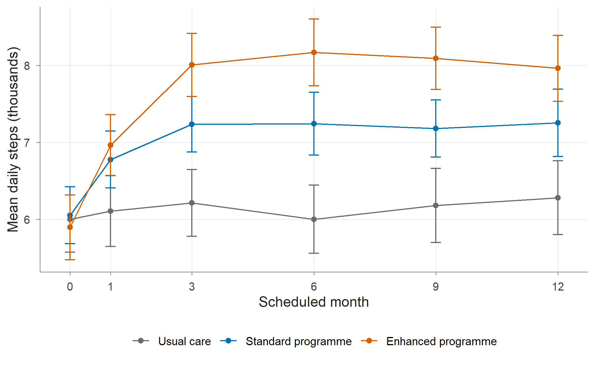
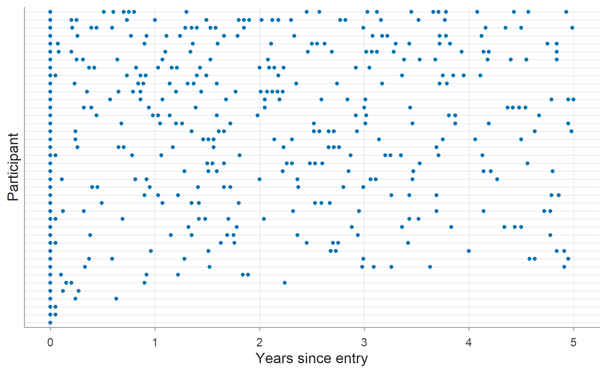
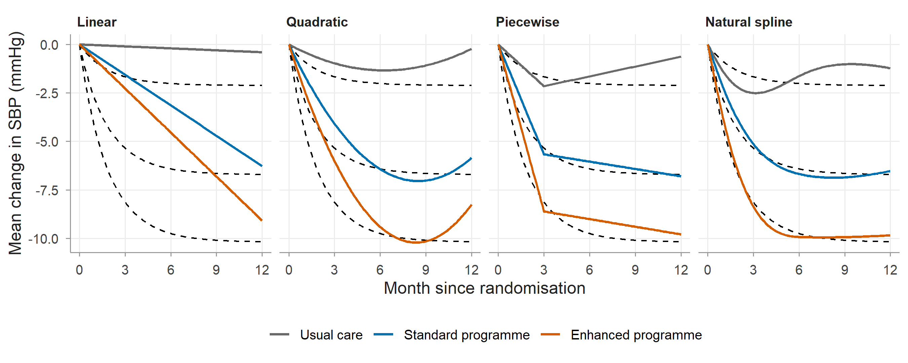
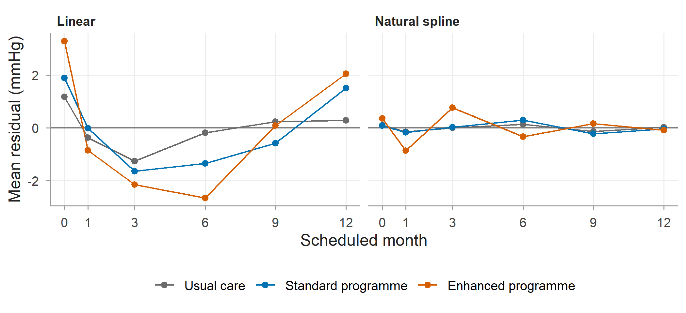
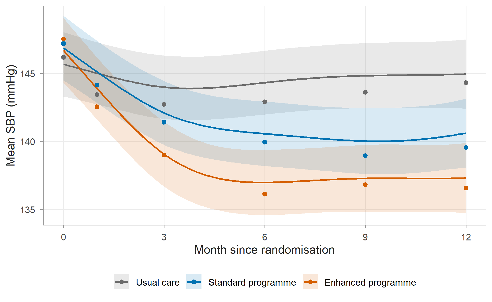
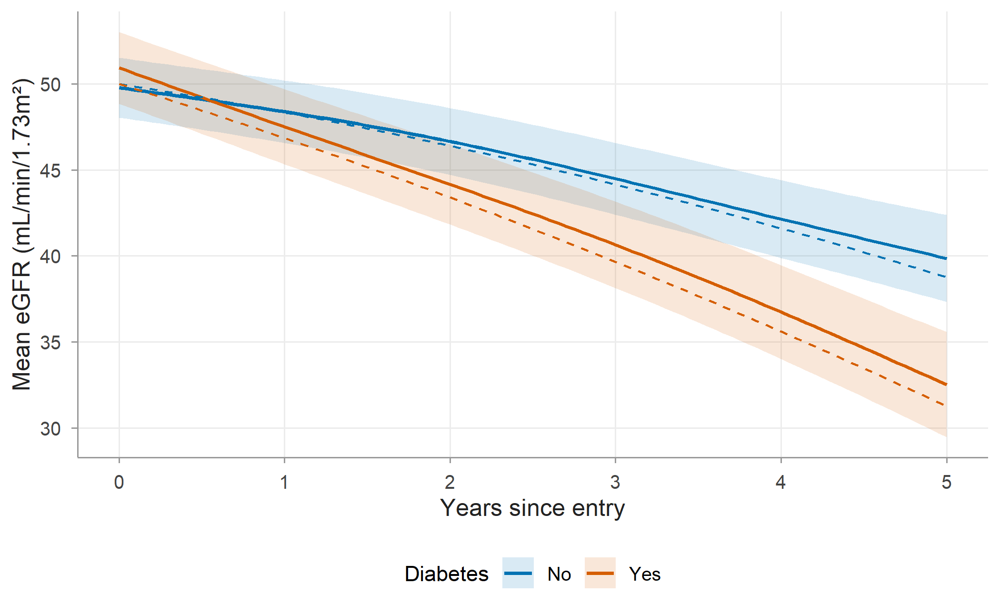

source(here::here("R", "setup.R"))
walk <- load_walk()
kidney <- load_kidney()
truth <- readRDS(here("data", "walk_truth.rds"))
f1 <- function(x) formatC(x, format = "f", digits = 1)
f2 <- function(x) formatC(x, format = "f", digits = 2)9 Time-varying predictors and nonlinear change
So far the course has used covariates that are fixed at baseline (arm, age, sex, body mass index) and has described time either as a set of scheduled visits or as a straight line. Real longitudinal studies are richer than that. Some predictors change from visit to visit: the number of steps a participant walks, the dose of a drug, a symptom score. Their association with the outcome has two parts, one that compares people with each other and one that compares occasions within the same person, and the two parts usually answer different scientific questions. Change itself is rarely linear either. In the WALK trial, blood pressure falls quickly in the first few months of the walking programme and then levels off; in the KIDNEY cohort, kidney function declines at an accelerating rate. This module shows how to separate within-person from between-person associations, how to use actual measurement times when visits are irregular, how to describe curved trajectories with polynomials, piecewise lines, splines and generalized additive mixed models, and why associations with time-varying covariates should be interpreted causally only with great care.
Learning outcomes
By the end of this module participants will be able to:
- 9.1 Distinguish time-invariant from time-varying covariates.
- 9.2 Separate within-person and between-person associations with person-mean centring, and interpret the contextual effect.
- 9.3 Analyse data with unequal measurement intervals using actual measurement times.
- 9.4 Fit and compare polynomial, piecewise linear and spline trajectories.
- 9.5 Fit an introductory generalized additive mixed model with
mgcvand interpret the smooth time effects. - 9.6 Explain why associations with time-varying covariates may reflect confounding, reverse causation or mediation, and state the limits of causal interpretation.
Prerequisites
Module 4 (linear mixed models with random intercepts and slopes), Module 5 (covariance structures and comparing models with AIC and BIC) and Module 6 (estimated marginal means, contrasts and the WALK primary estimand). Module 2 introduced the distinction between scheduled and actual time.
WarningSimulated data
All examples use simulated data from fictional studies. Results illustrate methods; they are not empirical findings.
9.1 Time-invariant and time-varying covariates
A time-invariant covariate takes one value per participant for the whole study. In WALK these are arm, clinic, age at baseline, sex and baseline body mass index (BMI). In long format the value is simply repeated on every row of the participant. A time-varying covariate can take a different value at each measurement occasion. In WALK the average daily step count in the week before each visit (steps, in thousands per day) is time-varying; so are time itself and anything measured at every visit.
walk |>
filter(id %in% c("W001", "W130")) |>
select(id, arm, age, bmi, month, steps, sbp)#> # A tibble: 12 × 7
#> id arm age bmi month steps sbp
#> <chr> <fct> <dbl> <dbl> <dbl> <dbl> <dbl>
#> 1 W001 EP 69 32.8 0 4.5 150
#> 2 W001 EP 69 32.8 1.09 6.5 148
#> 3 W001 EP 69 32.8 2.95 7.7 133
#> 4 W001 EP 69 32.8 6.04 7.2 140
#> 5 W001 EP 69 32.8 9.68 7 132
#> 6 W001 EP 69 32.8 11.13 8.2 132
#> 7 W130 EP 69 27.5 0 4.3 140
#> 8 W130 EP 69 27.5 0.76 2.6 134
#> 9 W130 EP 69 27.5 3.05 4 130
#> 10 W130 EP 69 27.5 6.12 6.4 126
#> 11 W130 EP 69 27.5 9.17 5.9 135
#> 12 W130 EP 69 27.5 11.17 4.3 132Participant W001 (enhanced programme) has the same arm, age and BMI on every row, but their steps rise from 4.5 to over 8 thousand a day while their SBP falls. The table already shows the two kinds of information that a time-varying covariate carries. W001’s average step count tells us where W001 sits relative to other people (a between-person comparison). The visit-to-visit fluctuations around that average tell us what happens to W001’s blood pressure in weeks when W001 walks more than usual (a within-person comparison).
The distinction matters for three reasons. First, time-invariant covariates can explain only differences between participants (they can shift the intercept, or the slope if interacted with time), whereas time-varying covariates can also explain changes within a participant. Second, a time-varying covariate measured after randomisation can itself be affected by the treatment, which changes what adjusting for it means (see the section on mediation below). Third, the within-person part of the association is automatically protected against confounding by any stable characteristic of the person, because each person serves as their own control; the between-person part has no such protection.
walk |>
group_by(arm, month_sched) |>
summarise(mean = mean(steps), se = sd(steps) / sqrt(n())) |>
ggplot(aes(month_sched, mean, colour = arm)) +
geom_line() + geom_point() +
geom_errorbar(aes(ymin = mean - 1.96 * se, ymax = mean + 1.96 * se),
width = 0.25) +
scale_x_continuous(breaks = c(0, 1, 3, 6, 9, 12)) +
scale_colour_arm(name = NULL, labels = walk_arm_labels) +
labs(x = "Scheduled month", y = "Mean daily steps (thousands)")
Figure 9.1 shows that steps rise in the two programme arms after randomisation and barely change under usual care. Steps is therefore not just a characteristic of participants: it is partly an outcome of the intervention. Keep this in mind; it returns when we ask what happens to the treatment effect when steps is added to the model.
9.2 Within-person and between-person associations
9.2.1 The research question and estimand
Two different questions can be asked about steps and blood pressure.
- Between-person: do people who habitually walk more have lower blood pressure than people who habitually walk less? The estimand is the difference in mean SBP between two participants whose usual step counts differ by 1,000 steps a day.
- Within-person: when a given participant walks more than usual, is their blood pressure lower than usual? The estimand is the expected change in a participant’s SBP for an increase of 1,000 steps a day above their own average.
Because the WALK data are simulated, we know both answers: the between-person effect is -1.5 mmHg and the within-person effect is -0.6 mmHg per 1,000 steps a day. The two differ by a factor of more than two. In real data the two can even have opposite signs: people who exercise a lot have lower heart rates at rest, but any one person’s heart rate is higher while they exercise (Curran and Bauer 2011).
9.2.2 Data structure and outcome types
We need long-format data with a participant identifier, the time-varying covariate at each occasion, and a continuous outcome. Person-mean centring works for any outcome type (it is just a construction of two covariates), but this section uses the linear mixed model for SBP. Each participant must contribute at least one observation to estimate a person mean, and at least two for the within-person deviation to vary.
9.2.3 Intuition
A single coefficient for steps in a mixed model, the “naive” approach, mixes the two kinds of comparison. The model uses both the differences between participants and the fluctuations within participants, and returns a weighted blend whose weights depend on how much variation there is at each level and on the random-effects variance. The blend is neither the within-person nor the between-person effect; it answers no clearly stated question.
Person-mean centring splits the covariate into two new variables (Enders and Tofighi 2007; Curran and Bauer 2011):
- the person mean \(\bar x_i\) (here centred at the grand mean of the person means), which varies only between participants;
- the within-person deviation \(x_{ij} - \bar x_i\), which varies only within participants and has mean zero for every participant.
Entering both in the model gives each its own coefficient. The deviation variable is uncorrelated with anything that is constant within a person, including the random intercept, so its coefficient is a purely within-person estimate.
9.2.4 The model
For participant \(i\) at occasion \(j\),
\[ y_{ij} = \mathbf{x}_{ij}^\top\boldsymbol\beta + \beta_W\,(s_{ij} - \bar s_i) + \beta_B\,(\bar s_i - \bar s) + b_{0i} + b_{1i} t_{ij} + \varepsilon_{ij}, \]
where \(y_{ij}\) is SBP, \(\mathbf{x}_{ij}^\top\boldsymbol\beta\) is the primary mean structure (a mean for each arm at each scheduled visit, plus age, sex and BMI in the adjusted model), \(s_{ij}\) is the step count (thousands per day) at the occasion, \(\bar s_i\) the participant’s mean over their observed occasions and \(\bar s\) the mean of the \(\bar s_i\). The coefficient \(\beta_W\) is the within-person effect and \(\beta_B\) the between-person effect. As in Module 4, \(b_{0i}\) and \(b_{1i}\) are the random intercept and random slope on actual time \(t_{ij}\), with covariance matrix \(G\), and \(\varepsilon_{ij} \sim N(0, \sigma^2)\) is the residual error.
An equivalent parameterisation enters the raw covariate and the person mean:
\[ y_{ij} = \mathbf{x}_{ij}^\top\boldsymbol\beta + \beta_W\, s_{ij} + \beta_C\,(\bar s_i - \bar s) + b_{0i} + b_{1i} t_{ij} + \varepsilon_{ij}, \qquad \beta_C = \beta_B - \beta_W . \]
Here \(\beta_C\) is the contextual effect: the difference in expected SBP between two participants with the same step count at this occasion but whose usual step counts differ by 1,000 a day. It tests directly whether the between-person and within-person effects differ. The two parameterisations fit the data identically; they only label the parameters differently.
9.2.5 Assumptions and limitations
The usual mixed-model assumptions apply (Module 4): a correctly specified mean, normally distributed random effects and residuals, and missingness that is at most missing at random (Module 10). In addition:
- The within-person effect is assumed to be the same for everyone. A random slope on the deviation variable relaxes this.
- The person mean is computed from the observed occasions only. Participants who drop out early have person means based on fewer visits, and in WALK these early visits are before the programme raised step counts. The observed person mean is also an imperfect measure of the habitual level, which slightly attenuates \(\beta_B\).
- The between-person effect is open to confounding by any characteristic that differs between people and is related to both steps and SBP. In WALK, people with a higher BMI walk less, and BMI raises SBP.
- The within-person effect is protected against stable confounders but not against time-varying confounders, reverse causation or mediation (see the final section and Module 13).
9.2.6 Fitting the model in R
walk <- walk |>
group_by(id) |>
mutate(steps_pm = mean(steps)) |> # person mean
ungroup() |>
mutate(steps_wc = steps - steps_pm, # within-person deviation
steps_gm = steps_pm - mean(steps_pm[!duplicated(id)]), # centred person mean
age10 = (age - 60) / 10,
bmi_c = bmi - 29)m_naive <- lmer(sbp ~ steps + visit_f * arm + (1 + month | id),
data = walk, control = lmer_ctrl)
m_wb <- lmer(sbp ~ steps_wc + steps_gm + visit_f * arm + (1 + month | id),
data = walk, control = lmer_ctrl)
m_wb_adj <- lmer(sbp ~ steps_wc + steps_gm + visit_f * arm +
age10 + sex + bmi_c + (1 + month | id),
data = walk, control = lmer_ctrl)
m_ctx <- lmer(sbp ~ steps + steps_gm + visit_f * arm +
age10 + sex + bmi_c + (1 + month | id),
data = walk, control = lmer_ctrl)All four models keep the primary mean structure (visit_f * arm), so the steps coefficients are estimated net of the average trajectory of each arm.
9.2.7 Interpreting the output
coef(summary(m_wb_adj))[c("steps_wc", "steps_gm", "age10", "sexFemale", "bmi_c"), ]#> Estimate Std. Error df t value Pr(>|t|)
#> steps_wc -0.6206 0.1284 1484.0 -4.833 1.484e-06
#> steps_gm -1.6905 0.3117 356.4 -5.423 1.084e-07
#> age10 1.5632 0.6791 343.9 2.302 2.194e-02
#> sexFemale -3.9577 1.2200 346.9 -3.244 1.293e-03
#> bmi_c 0.4319 0.1484 347.5 2.910 3.842e-03tab <- data.frame(
Model = c("Naive: one coefficient", "Person-mean centred",
"Person-mean centred", "Person-mean centred + age, sex, BMI",
"Person-mean centred + age, sex, BMI",
"Contextual parameterisation + age, sex, BMI"),
Term = c("steps", "within", "between", "within", "between", "contextual"),
`Estimate (95% CI)` = c(ci(nv), ci(w1), ci(b1), ci(w2), ci(b2), ci(cx)),
Truth = c("none", truth$beta_steps_within, truth$beta_steps_between,
truth$beta_steps_within, truth$beta_steps_between,
truth$beta_steps_between - truth$beta_steps_within),
check.names = FALSE)
knitr::kable(tab)| Model | Term | Estimate (95% CI) | Truth |
|---|---|---|---|
| Naive: one coefficient | steps | -0.80 (-1.03 to -0.56) | none |
| Person-mean centred | within | -0.62 (-0.87 to -0.37) | -0.6 |
| Person-mean centred | between | -1.91 (-2.53 to -1.29) | -1.5 |
| Person-mean centred + age, sex, BMI | within | -0.62 (-0.87 to -0.37) | -0.6 |
| Person-mean centred + age, sex, BMI | between | -1.69 (-2.30 to -1.08) | -1.5 |
| Contextual parameterisation + age, sex, BMI | contextual | -1.07 (-1.73 to -0.41) | -0.9 |
Reading Table 9.1 from the top:
| Output line | What it means | Value here |
|---|---|---|
steps (naive) |
A blend of within- and between-person comparisons | -0.80 mmHg per 1,000 steps/day |
steps_wc |
Within-person effect: SBP when a participant walks 1,000 steps/day more than their own average | -0.62 (-0.87 to -0.37) |
steps_gm |
Between-person effect: difference between participants whose average steps differ by 1,000/day | -1.69 (-2.30 to -1.08) |
steps_gm in the contextual model |
Between minus within: the extra association of habitual walking beyond the occasion-level effect | -1.07 (-1.73 to -0.41) |
The naive coefficient, -0.80, lies between the within-person and between-person estimates, as expected of a blend. It is not wrong arithmetic; it is an answer to an ill-posed question. The within-person estimate is -0.62 mmHg per 1,000 steps a day, close to the true -0.6, and it hardly changes when age, sex and BMI are added (-0.62 without them). That stability is expected: stable characteristics cannot confound a comparison of a person with themselves.
The between-person estimate behaves differently. Without adjustment it is -1.91; adjusting for age, sex and BMI moves it to -1.69, nearer the true -1.5. The unadjusted estimate is confounded by BMI: participants with a higher BMI walk less and have higher SBP, so part of the apparent benefit of walking more is really the benefit of a lower BMI. This is the general lesson. Between-person associations in longitudinal data are observational comparisons of different people and need the same confounder adjustment as a cross-sectional study.
The contextual effect, -1.07 (-1.73 to -0.41) mmHg, says that, among participants walking the same number of steps this week, those who usually walk 1,000 more steps a day have SBP about 1.1 mmHg lower. Its confidence interval excludes zero, so the data indicate that the between-person and within-person effects differ. Note how the estimate of steps in the contextual model equals the within-person estimate exactly; only the label of the second coefficient changes.
The person means vary more than the within-person deviations (SD 2.06 versus 1.18 thousand steps a day), so the between-person coefficient is estimated from more spread in the covariate; it is nevertheless less precise (SE 0.31 versus 0.13) because there are only 360 participants to compare but about 1,900 occasions.
9.2.8 Checking the model
Three checks are specific to this model. First, plot SBP against the deviation variable within a sample of participants to see whether the within-person relation looks linear. Second, check whether the within-person effect varies between participants by adding a random slope for steps_wc and comparing the fits. Third, check how sensitive the between-person estimate is to adjustment for plausible confounders, as done above.
m_wb_rs <- lmer(sbp ~ steps_wc + steps_gm + visit_f * arm + age10 + sex +
bmi_c + (1 + month + steps_wc | id),
data = walk, control = lmer_ctrl)#> boundary (singular) fit: see help('isSingular')anova(m_wb_adj, m_wb_rs, refit = FALSE)#> Data: walk
#> Models:
#> m_wb_adj: sbp ~ steps_wc + steps_gm + visit_f * arm + age10 + sex + bmi_c + (1 + month | id)
#> m_wb_rs: sbp ~ steps_wc + steps_gm + visit_f * arm + age10 + sex + bmi_c + (1 + month + steps_wc | id)
#> npar AIC BIC logLik -2*log(L) Chisq Df Pr(>Chisq)
#> m_wb_adj 27 13222 13372 -6584 13168
#> m_wb_rs 30 13225 13392 -6583 13165 2.49 3 0.48lmer() reports a singular fit for this model: the estimated random-effects covariance matrix lies on the boundary of the parameter space, a sign that the data carry little information about the extra variance component. The random slope for steps has an estimated SD of 0.26 mmHg per 1,000 steps/day and the likelihood-ratio test gives p = 0.477 (the test is conservative because the variance is tested on its boundary; Module 4). In the simulation every participant has the same within-person effect, so the absence of strong evidence for a random slope is the correct conclusion. Residual and random-effects checks are as in Module 11.
9.2.9 Reporting
TipReporting example
Daily step count was decomposed into each participant’s mean over their visits (between-person component, centred at the sample mean) and the deviation of each visit from that mean (within-person component), and both were added to the primary linear mixed model together with age, sex and BMI (Curran and Bauer 2011). Within participants, SBP was 0.62 mmHg lower (95% CI 0.37 to 0.87) in weeks when a participant walked 1,000 more steps a day than usual. Between participants, a 1,000 steps/day higher average step count was associated with 1.69 mmHg lower SBP (95% CI 1.08 to 2.30). The difference between the two (contextual effect) was -1.07 mmHg (-1.73 to -0.41). These associations are observational and may reflect confounding or reverse causation.
9.2.10 Common mistakes
ImportantCommon mistakes
- Reporting a single coefficient for a time-varying covariate and interpreting it as “the effect of walking more”. It mixes two questions. Decompose it.
- Centring at the grand mean instead of the person mean. Subtracting the overall mean from \(s_{ij}\) changes the intercept but leaves the within/between blend intact.
- Forgetting the person mean. A model with only the within-person deviation estimates \(\beta_W\) correctly, but leaves between-person variation in steps in the random intercept; adding \(\bar s_i\) makes the model complete and shows the contextual effect.
- Treating the between-person effect as causal without adjusting for between-person confounders such as BMI.
- Computing person means from a different set of rows than the model uses (for example, before removing rows with missing SBP).
9.3 Time-varying covariates, mediation and the treatment effect
In a randomised trial it is tempting to “adjust for” a time-varying covariate that predicts the outcome, in the hope of a more precise treatment effect. When the covariate is affected by the treatment, this changes the estimand. In WALK the programmes increase walking (Figure 9.1), and walking more lowers blood pressure. Part of each programme’s effect therefore acts through steps: steps is a mediator. Adjusting for steps removes that part and leaves an estimate of the effect of the programme other than through walking more, which is a different question from the trial’s primary one.
m_primary <- lmer(sbp ~ visit_f * arm + (1 + month | id),
data = walk, control = lmer_ctrl)
m_steps <- lmer(sbp ~ steps_wc + visit_f * arm + (1 + month | id),
data = walk, control = lmer_ctrl)
diff_change <- function(m) {
e <- emmeans(m, ~ visit_f | arm, at = list(visit_f = c("0", "12")))
ch <- contrast(e, list(change = c(-1, 1)), by = "arm")
summary(contrast(ch, "trt.vs.ctrl", by = NULL), infer = TRUE,
adjust = "none")
}
diff_change(m_primary)#> contrast estimate SE df lower.CL upper.CL t.ratio p.value
#> change SP - change UC -5.38 1.42 483 -8.17 -2.58 -3.782 0.0002
#> change EP - change UC -8.97 1.44 491 -11.79 -6.15 -6.243 <0.0001
#>
#> Degrees-of-freedom method: satterthwaite
#> Confidence level used: 0.95diff_change(m_steps)#> contrast estimate SE df lower.CL upper.CL t.ratio p.value
#> change SP - change UC -4.83 1.42 487 -7.62 -2.04 -3.405 0.0007
#> change EP - change UC -7.93 1.45 508 -10.78 -5.09 -5.483 <0.0001
#>
#> Degrees-of-freedom method: satterthwaite
#> Confidence level used: 0.95knitr::kable(data.frame(
Contrast = c("SP vs UC", "EP vs UC"),
`Primary model` = fmt_ci(d0$estimate, d0$lower.CL, d0$upper.CL),
`True total effect` = f1(true_total),
`Adjusted for steps` = fmt_ci(d1$estimate, d1$lower.CL, d1$upper.CL),
`True effect not through steps` = f1(true_direct),
check.names = FALSE))| Contrast | Primary model | True total effect | Adjusted for steps | True effect not through steps | |
|---|---|---|---|---|---|
| SP | SP vs UC | -5.4 (-8.2 to -2.6) | -4.6 | -4.8 (-7.6 to -2.0) | -4.0 |
| EP | EP vs UC | -9.0 (-11.8 to -6.1) | -8.1 | -7.9 (-10.8 to -5.1) | -7.0 |
Adjusting for within-person steps moves the SP contrast from -5.38 to -4.83 mmHg and the EP contrast from -8.97 to -7.93 mmHg, shifts of 0.54 and 1.04. In the simulation the parts of the effects that act through extra walking are -0.60 (SP) and -1.08 mmHg (EP), and the estimated shifts are close to these. Neither model is wrong, but they estimate different things:
- the primary model estimates the total effect of being randomised to a programme, which is what the trial was designed to answer;
- the steps-adjusted model estimates something like a direct effect: the effect of the programme among participants whose walking (relative to their own average) is held fixed.
The second interpretation needs much stronger assumptions. Randomisation protects the comparison of arms, but it does not protect the comparison of people with different step counts within an arm. If anything other than the programme affects both steps and SBP (illness, a change of medication, a stressful month), the “direct effect” is confounded. Formal mediation analysis with time-varying mediators requires the methods of Module 13 and Hernán and Robins (2020). The practical rule for trials is simple: do not adjust the primary treatment comparison for post-randomisation variables. Use them in secondary, clearly labelled analyses.
9.4 Unequal measurement intervals and actual time
9.4.1 The research question and estimand
Most longitudinal questions are about change per unit of time: how much does SBP fall per month, how many units of eGFR are lost per year? The estimand is defined on the time scale, so the analysis must place each measurement at the correct time.
9.4.2 Data structure and outcome types
WALK visits are scheduled at months 0, 1, 3, 6, 9 and 12, which are unequally spaced: 1 month between the first two visits, 3 months between later ones. In addition, actual visit times (month) scatter around the schedule (month_sched). The KIDNEY cohort has no schedule at all: eGFR is measured at clinic visits whose timing is irregular and differs between patients.
walk |>
mutate(dev = month - month_sched) |>
group_by(month_sched) |>
summarise(n = n(), mean_dev = mean(dev), sd_dev = sd(dev),
min = min(month), max = max(month))#> # A tibble: 6 × 6
#> month_sched n mean_dev sd_dev min max
#> <dbl> <int> <dbl> <dbl> <dbl> <dbl>
#> 1 0 360 0 0 0 0
#> 2 1 324 -0.001574 0.1201 0.7 1.39
#> 3 3 319 -0.01746 0.2519 2.23 3.69
#> 4 6 309 -0.01508 0.3355 5.16 6.86
#> 5 9 297 -0.02946 0.4077 7.8 10.01
#> 6 12 288 0.02208 0.4452 10.81 13.3kidney |> count(id) |> summarise(min = min(n), median = median(n), max = max(n))#> # A tibble: 1 × 3
#> min median max
#> <int> <dbl> <int>
#> 1 1 10 249.4.3 Intuition
Using visit number (1, 2, …, 6) as if it were time treats the gap from month 0 to month 1 as equal to the gap from month 9 to month 12. A straight line in visit number is then a curve in real time, and the slope “per visit” has no stable meaning. Using scheduled time fixes the spacing but ignores the actual deviations. Using actual time puts every observation where it belongs. A mixed model with time as a continuous covariate needs no balance or common schedule: each participant contributes whatever measurements they have, at whatever times.
9.4.4 The model
The linear-time WALK model with actual time is
\[ y_{ij} = \beta_0 + \beta_1 t_{ij} + \beta_2\text{SP}_i + \beta_3\text{EP}_i + \beta_4 t_{ij}\text{SP}_i + \beta_5 t_{ij}\text{EP}_i + b_{0i} + b_{1i} t_{ij} + \varepsilon_{ij}, \]
where \(t_{ij}\) is the actual month of the visit. Replacing \(t_{ij}\) by the scheduled month or by visit number gives the alternatives compared below. The random slope \(b_{1i}\) should also use actual time, because the variance of \(y_{ij}\) implied by a random slope, \(\tau_0^2 + 2\tau_{01}t_{ij} + \tau_1^2 t_{ij}^2 + \sigma^2\), depends on the real time elapsed. For the same reason the primary model uses scheduled visit for the mean but actual time in the random part. Continuous-time residual correlation structures, such as the exponential structure of Module 5, also need actual times.
9.4.5 Assumptions and limitations
Using actual time assumes that the timing of a visit does not carry information about the outcome beyond what the model includes. If participants with worse outcomes are seen earlier or more often, the visit process is informative; Module 10 shows how that biases simple summaries and when a mixed model is protected. Actual time also cannot be used for a categorical-time mean model, where the mean is estimated separately at each scheduled visit; that is why the WALK primary model combines visit_f for the mean with actual month in the random part.
9.4.6 Fitting the model in R
m_actual <- lmer(sbp ~ month * arm + (1 + month | id),
data = walk, control = lmer_ctrl)
m_sched <- lmer(sbp ~ month_sched * arm + (1 + month_sched | id),
data = walk, control = lmer_ctrl)
m_visit <- lmer(sbp ~ I(visit - 1) * arm + (1 + I(visit - 1) | id),
data = walk, control = lmer_ctrl)9.4.7 Interpreting the output
knitr::kable(data.frame(
`Time scale` = c("Actual month", "Scheduled month", "Visit number"),
Unit = c("per month", "per month", "per visit"),
`SP vs UC` = c(ci(a_sp), ci(s_sp), ci(v_sp)),
`EP vs UC` = c(ci(a_ep), ci(s_ep), ci(v_ep)), check.names = FALSE))| Time scale | Unit | SP vs UC | EP vs UC |
|---|---|---|---|
| Actual month | per month | -0.49 (-0.70 to -0.28) | -0.72 (-0.93 to -0.51) |
| Scheduled month | per month | -0.49 (-0.70 to -0.28) | -0.73 (-0.94 to -0.52) |
| Visit number | per visit | -1.26 (-1.77 to -0.74) | -1.92 (-2.44 to -1.40) |
With actual time, the EP slope is -0.72 mmHg per month steeper than usual care; with scheduled time it is -0.73. In WALK the two agree closely because the deviations from the schedule are small (SD at most about half a month) and unrelated to blood pressure. That is the best case. The visit-number model gives -1.92 mmHg “per visit”, a number with no stable meaning because a visit is one month early in the study and three months later. It cannot be converted to a monthly rate and it implies the wrong shape of change.
KIDNEY shows the problem more starkly because visits are irregular and patients with low eGFR are seen more often.
kidney <- kidney |>
group_by(id) |> arrange(years, .by_group = TRUE) |>
mutate(visit_no = row_number() - 1) |> ungroup()
mk_years <- lmer(egfr ~ years + (1 + years | id), data = kidney,
control = lmer_ctrl)
mk_visit <- lmer(egfr ~ visit_no + (1 + visit_no | id), data = kidney,
control = lmer_ctrl)
rbind(years = fixef(mk_years), visit_no = fixef(mk_visit))#> (Intercept) years
#> years 49.75 -2.586
#> visit_no 49.42 -1.063The estimated decline is -2.59 mL/min/1.73m² per year on the actual time scale and -1.06 per visit. A “visit” in KIDNEY lasts anything from a few weeks to more than a year, and it is shorter for patients with poor kidney function, so the per-visit slope mixes the rate of decline with the clinic’s scheduling policy. Only the per-year slope answers a clinical question.
9.4.8 Checking the model
Plot the observed times (a histogram of month - month_sched, or a dot plot of each participant’s visit times) to see how irregular the timing is and whether it differs by arm or by outcome level. Plot residuals against actual time to check the shape of the time trend; the next section shows what to do when the shape is not linear.
set.seed(9)
ids <- sample(unique(kidney$id), 40)
kidney |>
filter(id %in% ids) |>
add_count(id) |>
ggplot(aes(years, reorder(id, n))) +
geom_point(size = 1, colour = "#0072B2") +
labs(x = "Years since entry", y = "Participant") +
theme(axis.text.y = element_blank(), axis.ticks.y = element_blank())
9.4.9 Reporting
TipReporting example
Time was measured as actual months since randomisation, calculated from visit dates; scheduled visits were used only to define the categorical-time mean in the primary model. In the linear-time model, SBP declined 0.72 mmHg per month faster in the enhanced programme than in usual care (95% CI 0.51 to 0.93). Results were almost identical with scheduled time (-0.73 mmHg per month).
9.4.10 Common mistakes
ImportantCommon mistakes
- Using visit number as time when visits are unequally spaced or irregular.
- Binning irregular times into windows and then treating the windows as if all measurements were taken at the window midpoint, when the mixed model can use exact times.
- Using scheduled time in the random part of the model when actual times vary a lot: the implied variance and correlation depend on real elapsed time.
- Ignoring the reason for irregular timing. If visits happen because the patient is unwell, the timing is informative (Module 10).
9.5 Nonlinear trajectories: polynomials, piecewise lines and splines
9.5.1 The research question and estimand
The WALK primary estimand, the difference in mean change at month 12, can be estimated with categorical time, which makes no assumption about the shape of change between visits. Many questions are about the shape itself: how fast does the effect develop, does it plateau, what is the mean change at month 4 (an unscheduled time)? Those questions need a model for the mean trajectory as a smooth function of time. With irregular times, such as KIDNEY, there is no alternative: categorical time is impossible because there are no common visits.
9.5.2 Data structure and outcome types
The same long-format WALK data with actual time month. The methods apply to any outcome; with a non-Gaussian outcome they are used inside a GLMM or GEE (Modules 7 and 8).
9.5.3 Intuition
Because the data are simulated, we know that the true mean change in each arm follows an exponential approach to a plateau,
\[ \mu(t) - \mu(0) = -A\,\{1 - \exp(-t/2)\}, \]
plus a small extra fall that acts through increased walking. Change develops quickly in the first three months and is nearly complete by month 6. No straight line can follow this. The three standard ways of bending a line within a linear mixed model are:
- a polynomial, adding \(t^2\) (and possibly \(t^3\)) terms. Simple, but a quadratic is symmetric about its turning point, so it must turn back up after reaching its minimum;
- a piecewise linear (linear spline) model, with a separate slope before and after a knot. Easy to interpret when there is a natural break (here: the intensive phase of the programme in the first three months);
- a natural cubic spline, joining cubic pieces smoothly at several knots and constrained to be linear beyond the outer knots. Flexible and well-behaved, but its coefficients are not interpretable one by one.
All three remain linear in the parameters, so they are fitted by lmer() like any other fixed effect. Models that are nonlinear in their parameters, such as the exponential curve above with \(A\) and the rate as parameters, are covered in Module 13.
9.5.4 The model
Write \(f(t_{ij})\) for the shape of the mean trajectory in usual care and \(g(t_{ij})\) for the difference in shape for a programme arm. For each approach,
\[ y_{ij} = \beta_0 + \alpha_1\text{SP}_i + \alpha_2\text{EP}_i + \sum_{k=1}^{K} \left(\beta_k + \gamma_{k1}\text{SP}_i + \gamma_{k2}\text{EP}_i\right) h_k(t_{ij}) + b_{0i} + b_{1i}t_{ij} + \varepsilon_{ij}, \]
where the \(h_k(t)\) are basis functions of time:
- quadratic: \(h_1(t) = t\), \(h_2(t) = t^2\);
- piecewise linear with a knot at 3 months: \(h_1(t) = t\), \(h_2(t) = (t - 3)_+\), where \((t - 3)_+ = \max(t - 3, 0)\). The slope is \(\beta_1\) before month 3 and \(\beta_1 + \beta_2\) after it;
- natural cubic spline: \(h_1, h_2, h_3\) are the columns returned by
splines::ns(month, df = 3), with interior knots at the 33rd and 67th percentiles of the observed times.
The coefficients \(\beta_k\) describe usual care; \(\gamma_{k1}\) and \(\gamma_{k2}\) are the differences for SP and EP; \(\alpha_1, \alpha_2\) are baseline differences (expected to be near zero in a randomised trial). The random part is the same random intercept and slope on actual time as in the reference models.
9.5.5 Assumptions and limitations
Each model assumes that its family of curves contains (or closely approximates) the true mean trajectory. A misspecified shape biases the estimated mean at particular times, including month 12. Polynomials behave badly at the ends of the time range and should not be extrapolated. Piecewise models depend on knot placement; a knot chosen after looking at the data makes the model look better than it is. Splines need enough data across the time range, and their knots are placed by the software unless specified. The random part here allows only linear individual deviations, which is a simplification.
9.5.6 Fitting the model in R
The models differ in their fixed effects, so they are fitted by maximum likelihood (REML = FALSE) for comparison with AIC and BIC (Module 5).
walk <- walk |> mutate(month_p3 = pmax(month - 3, 0)) # (t - 3)+
fit_ml <- function(f) lmer(f, data = walk, control = lmer_ctrl, REML = FALSE)
m_lin <- fit_ml(sbp ~ month * arm + (1 + month | id))
m_quad <- fit_ml(sbp ~ (month + I(month^2)) * arm + (1 + month | id))
m_pw <- fit_ml(sbp ~ (month + month_p3) * arm + (1 + month | id))
m_ns <- fit_ml(sbp ~ splines::ns(month, df = 3) * arm + (1 + month | id))
m_cat <- fit_ml(sbp ~ visit_f * arm + (1 + month | id))9.5.7 Interpreting the output
The piecewise model has the most interpretable coefficients:
pw <- fixef_table(m_pw)
pw#> term estimate se df lower upper p
#> 1 (Intercept) 145.8390 1.2086 396.7 143.46294 148.2151 8.693e-315
#> 2 month -0.7179 0.2394 1440.0 -1.18745 -0.2484 2.751e-03
#> 3 month_p3 0.8868 0.2947 1261.1 0.30861 1.4649 2.673e-03
#> 4 armSP 1.1697 1.7094 396.8 -2.19086 4.5302 4.942e-01
#> 5 armEP 0.9337 1.7088 396.3 -2.42580 4.2932 5.851e-01
#> 6 month:armSP -1.1703 0.3368 1438.5 -1.83092 -0.5097 5.254e-04
#> 7 month:armEP -2.1524 0.3409 1439.0 -2.82118 -1.4837 3.619e-10
#> 8 month_p3:armSP 0.8756 0.4138 1256.8 0.06375 1.6874 3.455e-02
#> 9 month_p3:armEP 1.8524 0.4201 1261.4 1.02833 2.6765 1.122e-05| Output line | Meaning | Value |
|---|---|---|
month |
Usual-care slope in months 0–3 (mmHg/month) | -0.72 |
month_p3 |
Change in the usual-care slope after month 3 | 0.89, giving a later slope of 0.17 |
month:armEP |
Extra slope in EP during months 0–3 | -2.15, so the EP slope is -2.87 |
month_p3:armEP |
Extra change in slope after month 3 in EP | 1.85, so the later EP slope is -0.13 |
In the enhanced programme SBP falls by about 2.87 mmHg per month during the first three months and then by only 0.13 mmHg per month; the standard programme shows the same pattern (-1.89 then -0.13). This is the “fast then slow” shape of the true curve described by two straight lines.
ggplot(curves, aes(month, change, colour = arm)) +
geom_line(data = true_curve, aes(group = arm), linetype = "dashed",
colour = "black") +
geom_line(linewidth = 0.8) +
facet_wrap(~ model, nrow = 1) +
scale_x_continuous(breaks = c(0, 3, 6, 9, 12)) +
scale_colour_arm(name = NULL, labels = walk_arm_labels) +
labs(x = "Month since randomisation", y = "Mean change in SBP (mmHg)")
m12 <- function(m) {
p <- predict(m, newdata = filter(nd, month %in% c(0, 12)), re.form = NA)
ch <- p[c(2, 4, 6)] - p[c(1, 3, 5)]
c(SP = unname(ch[2] - ch[1]), EP = unname(ch[3] - ch[1]))
}
cat_ct <- fixef(m_cat)[c("visit_f12:armSP", "visit_f12:armEP")]
ic <- data.frame(
Model = c(names(mods), "Categorical time"),
Parameters = sapply(c(mods, list(m_cat)), function(m) attr(logLik(m), "df")),
AIC = round(sapply(c(mods, list(m_cat)), AIC), 1),
BIC = round(sapply(c(mods, list(m_cat)), BIC), 1),
`SP vs UC` = f2(c(sapply(mods, m12)["SP", ], cat_ct[1])),
`EP vs UC` = f2(c(sapply(mods, m12)["EP", ], cat_ct[2])),
check.names = FALSE, row.names = NULL)
knitr::kable(ic)
best_aic <- ic$Model[which.min(ic$AIC)]; best_bic <- ic$Model[which.min(ic$BIC)]| Model | Parameters | AIC | BIC | SP vs UC | EP vs UC |
|---|---|---|---|---|---|
| Linear | 10 | 13435 | 13491 | -5.88 | -8.68 |
| Quadratic | 13 | 13326 | 13399 | -5.63 | -8.03 |
| Piecewise | 13 | 13318 | 13390 | -6.16 | -9.16 |
| Natural spline | 16 | 13307 | 13396 | -5.30 | -8.62 |
| Categorical time | 22 | 13315 | 13437 | -5.38 | -8.97 |
Figure 9.3 and Table 9.4 tell a consistent story. The linear model misses the shape completely: it describes a steady decline that is far too slow in the first months and almost no change in usual care, and its AIC is about 128 points worse than the best model. The quadratic follows the early fall but curves back up after month 8, an artefact of its symmetric shape, so its month-12 values reflect the upturn rather than the plateau. The piecewise model captures the fast-then-slow pattern with a visible corner at month 3. The natural spline follows the true curves most closely in the programme arms but adds a small wiggle in usual care, where there is little change to describe.
By AIC the best model is the natural spline, by BIC the piecewise; the categorical-time model, which uses 22 parameters, is penalised by BIC for its flexibility. The month-12 contrasts of the smooth models range from -9.16 to -8.03 for EP. All are within sampling error of the truth (−8.1), but the spread shows that the shape assumption matters for a single time point. This is why the WALK primary analysis uses categorical time for the month-12 estimand, and smooth models are used to describe the shape.
9.5.8 Checking the model
Compare the fitted mean curves with the observed means at each scheduled visit, plot residuals against time (any curvature left over shows a misspecified shape), and compare candidate models by AIC/BIC fitted with ML. Prefer knots set in advance on substantive grounds (here: the end of the intensive phase at month 3) to knots chosen by searching.
bind_rows(
walk |> mutate(res = resid(m_lin), model = "Linear"),
walk |> mutate(res = resid(m_ns), model = "Natural spline")) |>
group_by(model, arm, month_sched) |>
summarise(res = mean(res)) |>
ggplot(aes(month_sched, res, colour = arm)) +
geom_hline(yintercept = 0, colour = "grey50") +
geom_line() + geom_point() +
facet_wrap(~ model) +
scale_x_continuous(breaks = c(0, 1, 3, 6, 9, 12)) +
scale_colour_arm(name = NULL, labels = walk_arm_labels) +
labs(x = "Scheduled month", y = "Mean residual (mmHg)")
The linear model leaves systematic residual patterns, while the spline residuals stay close to zero at every visit. Conditional residuals are partly absorbed by the random slopes, so the pattern understates the misfit of the mean; the comparison of fitted and true curves in Figure 9.3 shows it more fully.
9.5.9 Reporting
TipReporting example
The shape of the mean SBP trajectory was described with a piecewise linear model with a knot at month 3 (the end of the intensive phase of the programmes), with separate slopes for each arm and a random intercept and slope on actual time. In the enhanced programme SBP fell by 2.87 mmHg per month during months 0–3 and by 0.13 mmHg per month thereafter; in usual care the corresponding slopes were -0.72 and 0.17 mmHg per month. A natural cubic spline (3 degrees of freedom) gave similar fitted curves (AIC 13306.9 vs 13317.5).
9.5.10 Common mistakes
ImportantCommon mistakes
- Interpreting individual spline coefficients. Interpret the fitted curve and contrasts computed from it, not the basis coefficients.
- Extrapolating a polynomial beyond the observed time range, or reading its turning point as a real feature.
- Choosing knots by trying many and keeping the best fit, then reporting the model as if pre-specified.
- Comparing models with different fixed effects using REML likelihoods. Use ML (
REML = FALSE) for AIC/BIC comparisons, then refit the chosen model with REML for reporting. - Forgetting the interaction with arm. A common shape for all arms with only shifted levels cannot estimate a difference in change.
9.6 Generalized additive mixed models
9.6.1 The research question and estimand
Splines require the analyst to choose the number and position of knots. A generalized additive mixed model (GAMM) lets the data choose how wiggly the curve should be, through a penalty on roughness (Wood 2017). The estimand is the same smooth mean trajectory (and contrasts derived from it) as in the previous section.
9.6.2 Data structure and outcome types
Long-format data with actual time. mgcv handles Gaussian, binomial, Poisson and other outcomes. We use WALK (SBP by arm) and KIDNEY (eGFR, a nonlinear decline in an observational cohort with irregular visits).
9.6.3 Intuition
A GAMM represents each smooth function with a rich spline basis (here 5 basis functions per arm) and adds a penalty that grows with the curvature of the function. The amount of penalty is estimated from the data by REML, in the same way as a variance component. In fact a penalised smooth is a mixed model in disguise: the wiggly part of the curve is treated as a random effect whose variance controls the smoothness. The result is summarised by the effective degrees of freedom (edf): an edf of 1 means a straight line, larger values mean more curvature.
9.6.4 The model
For WALK,
\[ y_{ij} = \beta_0 + \alpha_1\text{SP}_i + \alpha_2\text{EP}_i + f_{a(i)}(t_{ij}) + b_{0i} + b_{1i}t_{ij} + \varepsilon_{ij}, \]
where \(a(i)\) is the arm of participant \(i\) and \(f_{\text{UC}}, f_{\text{SP}}, f_{\text{EP}}\) are three smooth functions of actual time \(t_{ij}\), each centred to average zero over the data (so \(\alpha_1\), \(\alpha_2\) are average differences between arms, not baseline differences). Each \(f_a(t) = \sum_{k} \theta_{ak} B_k(t)\) is a combination of spline basis functions \(B_k\), with a penalty \(\lambda_a \int f_a''(t)^2\,dt\) on its roughness. The smoothing parameters \(\lambda_a\) are estimated by REML. The random effects \(b_{0i}, b_{1i}\) and residual \(\varepsilon_{ij}\) are as before.
9.6.5 Assumptions and limitations
The GAMM assumes that the true curves are smooth, that the basis dimension k is large enough to represent them, and the usual mixed-model assumptions. Confidence intervals for smooths are Bayesian credible intervals with good average coverage across the curve, not exact pointwise intervals. Smoothness is estimated: with sparse data near the ends, the curve may be over- or under-smoothed. GAMMs describe shapes well but are harder to report than parametric models, because there is no single coefficient for “the rate of change”.
9.6.6 Fitting the model in R
mgcv offers two routes. gamm() passes the random effects to nlme::lme(). gam() and bam() instead write the random effects as penalised smooths with bs = "re":
g_walk <- gamm(sbp ~ arm + s(month, by = arm, k = 5),
random = list(id = ~ 1 + month),
data = walk, method = "REML")walk$idf <- factor(walk$id) # bs = "re" needs a factor
g_bam <- bam(sbp ~ arm + s(month, by = arm, k = 5) +
s(idf, bs = "re") + s(idf, month, bs = "re"),
data = walk, method = "fREML")The formula gam(sbp ~ arm + s(month, by = arm, k = 5) + s(id, bs = "re") + s(id, month, bs = "re"), method = "REML") is valid and gives the same model as bam() above (with id a factor). We do not run it here: with 360 participants it took about nine minutes on the authors’ computer, because gam() treats each of the 720 random coefficients as part of a dense penalised model. bam() is designed for large models and fits the same formula in well under a minute. Note one difference: s(idf) + s(idf, month) gives independent random intercepts and slopes (no correlation \(\tau_{01}\)), whereas gamm() with ~ 1 + month | id estimates the correlation.
9.6.7 Interpreting the output
summary(g_walk$gam)#>
#> Family: gaussian
#> Link function: identity
#>
#> Formula:
#> sbp ~ arm + s(month, by = arm, k = 5)
#>
#> Parametric coefficients:
#> Estimate Std. Error t value Pr(>|t|)
#> (Intercept) 144.83 1.13 128.27 <2e-16 ***
#> armSP -2.09 1.60 -1.31 0.1910
#> armEP -4.36 1.60 -2.73 0.0064 **
#> ---
#> Signif. codes: 0 '***' 0.001 '**' 0.01 '*' 0.05 '.' 0.1 ' ' 1
#>
#> Approximate significance of smooth terms:
#> edf Ref.df F p-value
#> s(month):armUC 2.82 2.82 2.93 0.11
#> s(month):armSP 3.23 3.23 26.52 <2e-16 ***
#> s(month):armEP 3.55 3.55 52.41 <2e-16 ***
#> ---
#> Signif. codes: 0 '***' 0.001 '**' 0.01 '*' 0.05 '.' 0.1 ' ' 1
#>
#> R-sq.(adj) = 0.0568
#> Scale est. = 31.695 n = 1897| Output line | Meaning | Value here |
|---|---|---|
armSP, armEP |
Average SBP difference from UC over the follow-up (smooths are centred) | -2.09, -4.36 mmHg |
s(month):armUC edf |
Curvature of the usual-care trajectory | 2.82 |
s(month):armSP edf |
Curvature of the SP trajectory | 3.23 |
s(month):armEP edf |
Curvature of the EP trajectory | 3.55 |
| p-values for smooths | Test that the smooth is flat (zero everywhere) | p = 0.108 (UC), p < 0.001 (EP) |
All three smooths have edf well above 1, so the data support curved trajectories, and the curvature is greatest in the enhanced programme. The UC smooth is only weakly distinguishable from a flat line (p = 0.108): usual care changes little. The parametric arm coefficients are averages over the whole follow-up, not baseline differences; this is a frequent source of misinterpretation.
To obtain the trial estimand from a GAMM, compute it from predictions. The linear predictor matrix (type = "lpmatrix") gives the design rows for months 0 and 12 in each arm; a contrast vector then gives the estimate and its standard error:
Xp <- predict(g_walk$gam, newdata = ndg, type = "lpmatrix")
L <- (Xp[6, ] - Xp[5, ]) - (Xp[2, ] - Xp[1, ]) # EP change minus UC change
est <- sum(L * coef(g_walk$gam)); se <- sqrt(drop(t(L) %*% vcov(g_walk$gam) %*% L))The GAMM estimates the difference in mean change at month 12 as -5.54 mmHg (SE 1.34) for SP and -8.66 mmHg (SE 1.36) for EP, close to the spline and categorical-time estimates. The bam() fit gives nearly identical smooths (edf 2.83, 3.23, 3.55).
ndp <- expand.grid(month = seq(0, 12, by = 0.1),
arm = factor(c("UC", "SP", "EP"), levels = c("UC", "SP", "EP")))
pp <- predict(g_walk$gam, newdata = ndp, se.fit = TRUE)
ndp <- ndp |> mutate(fit = pp$fit, lo = fit - 1.96 * pp$se.fit,
hi = fit + 1.96 * pp$se.fit)
obs_means <- walk |> group_by(arm, month_sched) |> summarise(sbp = mean(sbp))
ggplot(ndp, aes(month, fit, colour = arm, fill = arm)) +
geom_ribbon(aes(ymin = lo, ymax = hi), alpha = 0.15, colour = NA) +
geom_line(linewidth = 0.8) +
geom_point(data = obs_means, aes(month_sched, sbp)) +
scale_x_continuous(breaks = c(0, 3, 6, 9, 12)) +
scale_colour_arm(name = NULL, labels = walk_arm_labels) +
scale_fill_arm(name = NULL, labels = walk_arm_labels) +
labs(x = "Month since randomisation", y = "Mean SBP (mmHg)")
KIDNEY: a nonlinear decline with irregular visits
The KIDNEY eGFR data have no schedule, so a GAMM on actual time is natural. We allow a different smooth decline for participants with and without diabetes and adjust for age.
kidney <- kidney |>
mutate(age10 = (age - 60) / 10,
dm = factor(diabetes, levels = 0:1, labels = c("No", "Yes")))
g_kid <- gamm(egfr ~ dm + age10 + s(years, by = dm, k = 6),
random = list(id = ~ 1 + years), data = kidney, method = "REML")
summary(g_kid$gam)$s.table#> edf Ref.df F p-value
#> s(years):dmNo 2.547 2.547 77.82 0
#> s(years):dmYes 2.313 2.313 174.15 0ktr <- readRDS(here("data", "kidney_truth.rds"))
ndk <- expand.grid(years = seq(0, 5, by = 0.05), dm = c("No", "Yes"), age10 = 0)
pk <- predict(g_kid$gam, newdata = ndk, se.fit = TRUE)
ndk <- ndk |> mutate(fit = pk$fit, lo = fit - 1.96 * pk$se.fit, hi = fit + 1.96 * pk$se.fit,
true = ktr$b0 + (ktr$b1 + ktr$b1_dm * (dm == "Yes")) * years +
ktr$b2 * years^2)
ggplot(ndk, aes(years, fit, colour = dm, fill = dm)) +
geom_ribbon(aes(ymin = lo, ymax = hi), alpha = 0.15, colour = NA) +
geom_line(linewidth = 0.8) +
geom_line(aes(y = true), linetype = "dashed") +
scale_colour_manual(values = c(No = "#0072B2", Yes = "#D55E00"), name = "Diabetes") +
scale_fill_manual(values = c(No = "#0072B2", Yes = "#D55E00"), name = "Diabetes") +
labs(x = "Years since entry", y = "Mean eGFR (mL/min/1.73m²)")
Both smooths are clearly curved (edf 2.55 without diabetes, 2.31 with), and the decline accelerates over time. Over five years the estimated mean loss at age 60 is 9.9 units without diabetes and 18.4 with diabetes. The fitted curves track the true quadratic trajectories well, although they are less certain after year 4, where fewer patients remain under observation. KIDNEY measurements stop at kidney failure and visits are more frequent when eGFR is low; Module 10 examines what these features do to the analysis, and Module 13 fits a joint model for eGFR and kidney failure.
9.6.8 Checking the model
gam.check() reports, for each smooth, whether the basis dimension k may be too small (a low k-index with a small p-value suggests increasing k). Refit with a larger k and check that the curve changes little. Residual checks are as for any mixed model; for gamm() fits use g$lme for the mixed-model residuals.
k_check <- gam.check(g_walk$gam)#>
#> 'gamm' based fit - care required with interpretation.
#> Checks based on working residuals may be misleading.
#> Basis dimension (k) checking results. Low p-value (k-index<1) may
#> indicate that k is too low, especially if edf is close to k'.
#>
#> k' edf k-index p-value
#> s(month):armUC 4.00 2.82 1.08 1
#> s(month):armSP 4.00 3.23 1.08 1
#> s(month):armEP 4.00 3.55 1.08 1The k-index is above 1 for all three smooths with large p-values, so there is no sign that k = 5 is too small. The EP smooth uses 3.55 of its 4 available degrees of freedom; with visits clustered around six scheduled times there is little information for a more flexible curve, so increasing k would change little.
9.6.9 Reporting
TipReporting example
Mean SBP trajectories were described with a generalized additive mixed model with a separate penalised regression spline of actual time for each arm (basis dimension 5, smoothness estimated by REML) and a correlated random intercept and slope for each participant, fitted with mgcv::gamm() (Wood 2017). The trajectories were curved in the programme arms (effective degrees of freedom 3.23 for SP and 3.55 for EP), with most of the reduction occurring in the first three months. The difference in mean change from baseline to month 12, derived from the fitted curves, was -8.66 mmHg (95% CI -11.34 to -5.99) for EP versus usual care.
9.6.10 Common mistakes
ImportantCommon mistakes
- Reading the parametric arm coefficients as baseline differences. Smooths are centred, so arm coefficients are averages over follow-up.
- Using
s(id, bs = "re")with a characterid. It must be a factor; otherwisemgcvtreats it as a numeric covariate or stops. - Running
gam()with hundreds of random-effect levels and waiting a long time. Usegamm()orbam(). - Choosing
klarger than the number of distinct time points (scheduled designs have few). - Reporting only p-values for smooths. Show the fitted curves with intervals and derive the estimands of interest from predictions.
9.7 Confounding, reverse causation and the limits of causal interpretation
Within-person associations are often described as “each person is their own control”, which is true but only for characteristics that do not change. Three problems remain, and the WALK example illustrates each.
Time-varying confounding. Anything that changes over time and affects both steps and SBP confounds the within-person association. A bout of illness reduces walking and may also raise blood pressure (through pain, stress, or a change in medication). Comparing a participant’s ill weeks with their well weeks then attributes the effect of illness to walking. Person-mean centring does nothing about this, because the confounder varies within the person. Measuring and adjusting for such variables helps only if they are not themselves affected by earlier steps or SBP; when they are, ordinary adjustment fails (Module 13).
Reverse causation. The direction of influence may run from the outcome to the covariate. Suppose a participant’s SBP is high at one visit and the nurse responds by advising them to walk more. Their steps at the next visit then increase because SBP was high. If SBP then remains somewhat high (because of the serial correlation of SBP), weeks with more steps coincide with weeks of higher SBP, which pulls the within-person association towards zero or even reverses it. Lagging the covariate (using steps before the previous visit to predict SBP at this one) reduces but does not remove the problem, because the lagged covariate may itself have been influenced by earlier SBP.
Mediation. As shown above, steps lie on the causal pathway from the programme to SBP. Adjusting for a mediator changes the estimand from a total to a (controlled) direct effect and can introduce bias if mediator and outcome share causes.
What can be said with confidence? In WALK the arm comparison is protected by randomisation, so the primary estimand (difference in mean change at month 12) has a causal interpretation under the usual trial assumptions. The within-person and between-person associations of steps with SBP are observational associations. They are useful for description and for generating hypotheses, and the within-person version is protected against stable confounders, but neither is an estimate of “the effect of walking 1,000 more steps” without assumptions that the data cannot verify. We know the true effects here only because we simulated the data. Methods for causal effects of time-varying exposures, including marginal structural models with inverse probability weighting and g-methods, are introduced in Module 13 (Hernán and Robins 2020; Robins et al. 1995).
NoteWhy this matters
A report that says “each 1,000 additional steps per day lowered SBP by 0.6 mmHg” makes a causal claim. A report that says “SBP was on average 0.6 mmHg lower at visits when participants walked 1,000 more steps a day than their own average” describes an association. Use the second kind of sentence unless the design or a causal method justifies the first.
9.8 Summary
Time-varying covariates carry two kinds of information, and person-mean centring separates them: in WALK, walking more than one’s own average was associated with a smaller difference in SBP than walking more than other people, and the between-person association needed adjustment for BMI to approach its true value. When a time-varying covariate is affected by treatment, adjusting for it changes the treatment estimand from a total to a direct effect, so trial primary analyses should not adjust for it. Time should be measured as actually elapsed, which also makes irregular designs such as KIDNEY straightforward to analyse. Curved trajectories can be described with polynomials, piecewise lines, natural splines or penalised smooths in a GAMM; the piecewise model gave interpretable rates for the early and late phases, the spline and GAMM followed the true curves closely, and the quadratic showed the artefacts typical of polynomials. None of these associations with steps can be read causally without further assumptions.
9.9 Further reading
- Curran and Bauer (2011) explain the separation of within-person and between-person effects in longitudinal models, including the contextual effect.
- Enders and Tofighi (2007) discuss centring of predictors in multilevel models and what each choice estimates.
- Wood (2017) is the reference text for generalized additive models and
mgcv, including GAMMs. - Fitzmaurice et al. (2011) (chapters on modelling the mean and time-varying covariates) cover polynomial and spline trajectories and the problems of time-varying covariates.
- Hernán and Robins (2020) introduce causal inference for time-varying treatments, the background for Module 13.
9.10 Exercises
The workbook for this module (workbook/wb09-time-varying-nonlinear.qmd) contains guided exercises on person-mean centring, mediation, time scales, piecewise and spline trajectories and GAMMs, and independent exercises using WALK and KIDNEY. Solutions are in answer-key/ak09-time-varying-nonlinear.qmd.